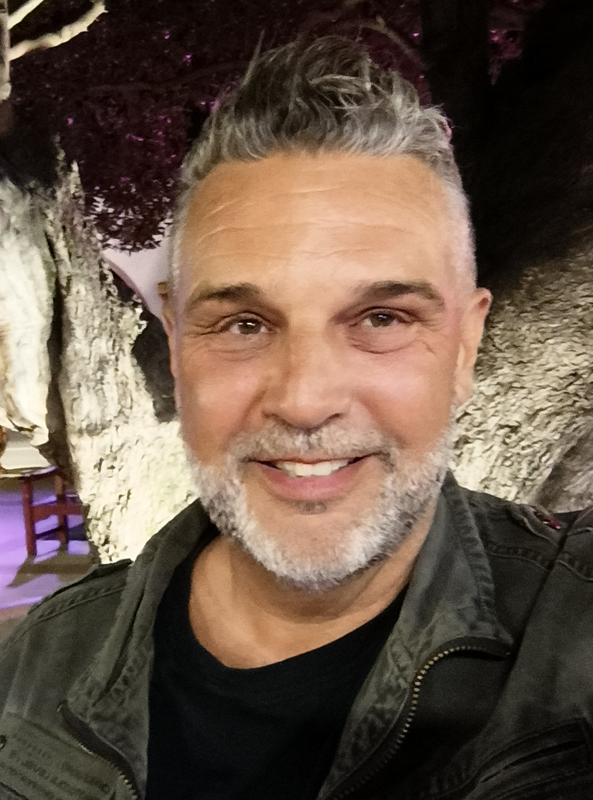

PETER
BÜHLER
Experte Gebäudeautomation
Technischer Koordinator
Planung · Koordination · Systeme · Beratung
// INFO: Kein LinkedIn · Kein Xing · Direkter Kontakt bevorzugt
Luzern · Schweiz · buhlepech@pm.me

Scroll
Systembeschreibung
Was ich mache
30 Jahre Gebäudeautomation, jede Stufe selbst durchlaufen. Ich spreche die Sprache des Monteurs, des Programmierers, des Planers und der Bauherrschaft — weil ich alles von Grund auf durchlaufen habe.
Heute leite ich die Gebäudeautomation und Systeme in der LUKS Gruppe, einer der grössten Spitalgruppen der Schweiz. Aktuell im Aufbau: Neubau Luzern, neue Spitäler in Wolhusen, Sursee und Nidwalden.
Systemparameter
Wofür ich stehe
SYSTEMDENKER
Keine Produkte — Systeme und Funktionen.
Konzepte die über das Projekt hinaus tragen. Über Standorte, über Betreiber, über Zeit.
VERTIKALE_TIEFE
Vom Unterputzrohr bis zur Strategie.
Jede Stufe selbst durchlaufen, kein Bruch in der Kette. Eine Glaubwürdigkeit, die man sich nicht anlesen kann.
BAUHERRENSEITE
Ich sitze am richtigen Tisch.
Ich weiss was Planer nicht wissen und was Betreiber brauchen — weil ich beides war.
NORMFEST · UNABHÄNGIG · INTEGRAL
SIA · KBOB · GA Fachverbände
Herstellerunabhängige Planung, QS Mandate, technische Koordination über alle Systeme und Gewerke.
MEHRWERT_FOKUS
Nachhaltige Lösungen die wirklich funktionieren.
Nicht Resultate die gut aussehen — vor Etappensieg.
EHRLICHKEIT := HIGH_PRIO
Ich sage was ist, nicht was man hören will.
Im Projekt, in der Beratung, in der Zusammenarbeit.
SYSTEMEFFIZIENZ · RESILIENZ
Systeme müssen laufen wenn es drauf ankommt.
Effizienz und Ausfallsicherheit sind keine Gegensätze.
ERFAHRUNGSDICHTE
Kein Lehrbuch ersetzt das. Film ab.
30 Jahre. 7'500 Arbeitstage. Es gibt nur wenig ideale Lösungen, aber unendliche Irrwege. Ich kenne die meisten davon.
INTEGRALES DENKEN · ALLE LAGER
Technik. Planung. Betrieb. Bauherrschaft.
Ich war auf jeder Seite des Tisches. Wer nur eine Seite kennt, optimiert für sich. Ich optimiere für das System.
Messwerte
Zahlen die sprechen
0
Inbetriebnahmen
GA-Anlagen gemacht oder geleitet, schweizweit
0
Jahre
Gebäudeautomation, jede Stufe selbst durchlaufen
0
Jahre Planung
Integrale GA-Planung auf Bauherrenseite
0
Jahre Siemens
Building Technologies (Landis & Staefa)
0
Karrierestufen
Vom Elektromonteur bis zur Fachbereichsleitung
0
Schutzzone 1
Klassifizierte Anlagen, Armee, technische Koordination höchste Sicherheitsstufe
Prozessliste
Ausgewählte Projekte
| Projekt | Kontext | Funktion | Status |
|---|---|---|---|
| LUKS Gruppe | Neubau Luzern, Wolhusen, Sursee, Nidwalden | Leiter Gebäudeautomation und Systeme der LUKS Gruppe | AKTIV |
| Bürgenstock Hotel Resort | Resort, Hürlimann Areal — Grossanlage, integral | Übergeordneter GA Konzeptplaner | DONE |
| armasuisse Standorte | Klassifizierte Anlagen bis Schutzzone 1, Schweiz | GA Planung und techn. Koordination höchste Sicherheitsstufe | DONE |
| RUAG Real Estate | Schweizweite Liegenschaftsinfrastruktur | Leitung Haustechnik & Infrastruktur CH, GA Standardisierung, pbFM | DONE |
| Post Hauptsitz Wankdorf | Grossprojekt öffentlich, Bern | QS Mandat, Bauherrenbegleitung, Konzeptplaner Leitebene, Sicherheitsloge | DONE |
| Flugplatz Emmen & Meiringen | Militär, Spezialbauten | Energiemonitoring, Betriebskonzept GA | DONE |
| Flughafen Zürich | Betriebskonzept GA und BACnet Multivendor | Consulting | DONE |
| Siemens Labor Zug – TH1C | Musteranlage, Siemens Spezial-Projekt | GA Planer | DONE |
| Dolder Grand Zürich | Luxushotel, 4 Mio. CHF GA | Projektleitung als GF | DONE |
| Main Tower Zürich, Thurgauerstrasse | Hochhaus, Büro- und Mischnutzung | GA Projektleitung | DONE |
| KKL Luzern | Kultur- und Kongresszentrum | IBN Gebäudeautomation (Siemens) | DONE |
| Diverse Spitäler CH | Akutspitäler, Rehakliniken, mehrere Kantone | Planung, IBN, Projektleitung, QS | DONE |
Signalpfad
Karriere — von Grund auf
2021 — HEUTE
Leiter Gebäudeautomation und Systeme
LUKS Gruppe, Luzern
Planung · Koordination · Spitalgruppe
2017 — 2021
Senior Projektleiter GA / Techn. Koordination, Bereichsaufbau
Thomas Lüem Partner AG, Baar
Planung · Koordination · Beratung
2016 — 2017
Leiter Haustechnik Infrastruktur CH
RUAG Real Estate AG
Planung · Koordination
2010 — 2016
Senior Projektleiter GA, MSRL Planer
Alfacel AG, Kriens
Planung · Koordination
2008 — 2010
Geschäftsführer Building Automation
Panthek Building Automation AG, Zürich
Führung
2007 — 2008
Projektleiter MSRL
Scherler AG, Luzern
Planer
2000 — 2007
Serviceprojektleiter / Projektleiter & Modernisierung
Siemens Building Technologies
Engineering · Serviceverkauf
1994 — 2000
Servicetechniker Gebäudeautomation
Siemens (Landis & Staefa), Reussbühl
Techniker · Programmierer
1990 — 1994
Elektromonteur
CKW · Hans Leutenegger AG · Landis & Gyr
Installation
1986 — 1990 · Fundament
Elektromonteur — Lehre mit Auszeichnung
CKW · Ehren-Urkunde Kanton Luzern
Grundstein
Serviceangebot
Verfügbarkeit
Im Rahmen meiner Haupttätigkeit beim LUKS bin ich offen für ausgewählte Zusammenarbeiten:
SVC-01
Fachexpertise & Gutachten
Beurteilung von GA Konzepten, Systemarchitekturen, QS Mandaten
SVC-02
Normen & Gremienarbeit
SIA · KBOB · GA Fachverbände — wo fundierte und echte Praxiserfahrung gefragt ist. Da wo heute Theorie und Realität auseinanderklaffen.
SVC-03
Beratungsmandate
Strategische Beratung bei komplexen Bauherrenentscheiden im GA-Umfeld
SVC-04
Wissenstransfer
Fachreferate · Workshops · Weiterbildung im GA-Bereich
SVC-05
Resilienzberatung
Wie krisensicher sind Ihre Systeme für die nächsten Jahrzehnte gerüstet? GA-Infrastruktur, Betriebskonzepte und Systemarchitekturen auf Zukunftsfähigkeit und Ausfallsicherheit geprüft.
SVC-06
Austausch
Interessante Menschen mit Weitblick und Tiefgang — noch +2 Plätze.
SVC-07
Resilienzanalyse · Systemcheck
Bestandsaufnahme der GA-Infrastruktur gegen definierte Ausfallszenarien. Blackout, Cyberangriff, Lieferkettenunterbruch. Mit Bericht und Massnahmenplan.
SVC-08
KI-Integration in GA
Begleitung von Bauherren und Betreibern die KI in GA und Leitsystemen einführen wollen, ohne die operative und sicherheitstechnische Resilienz zu opfern. Plan B inklusive.
SVC-09
Cybersecurity GA
BACnetSecure, OT-Sicherheit, Angriffsvektoren auf Gebäudesysteme. GA-Tiefe kombiniert mit Security-Verständnis.
SVC-10
Kriseninfrastruktur
GA-Resilienzprüfung für Spitäler, Rechenzentren, Gemeinden, Industrie und KMU. Wer ist vorbereitet wenn es darauf ankommt?
SVC-11
Transition & Nachfolge
Wenn der erfahrene GA-Planer geht und niemand mehr versteht was gebaut wurde. Altanlagen, Protokolle, Systemwissen sichern.
Externe Validierung
Referenzen
Hervorragende Fachkenntnisse, unternehmerisches Denken, Kreativität bei unkonventionellen Lösungen.
— Siemens Building Technologies
Verbesserungspotenzial sofort erkannt, eigene Ideen vertreten und durchgesetzt.
— RUAG Real Estate AG
Fundiertes Fachwissen und umfangreiche Erfahrung — fand sich in komplexen Aufgabenstellungen rasch zurecht.
— Alfacel AG, Planung Gebäudeautomation
Verbindungsaufbau
Kontakt
// STATUS: Kein LinkedIn · Kein Xing · Direkter Kontakt bevorzugt